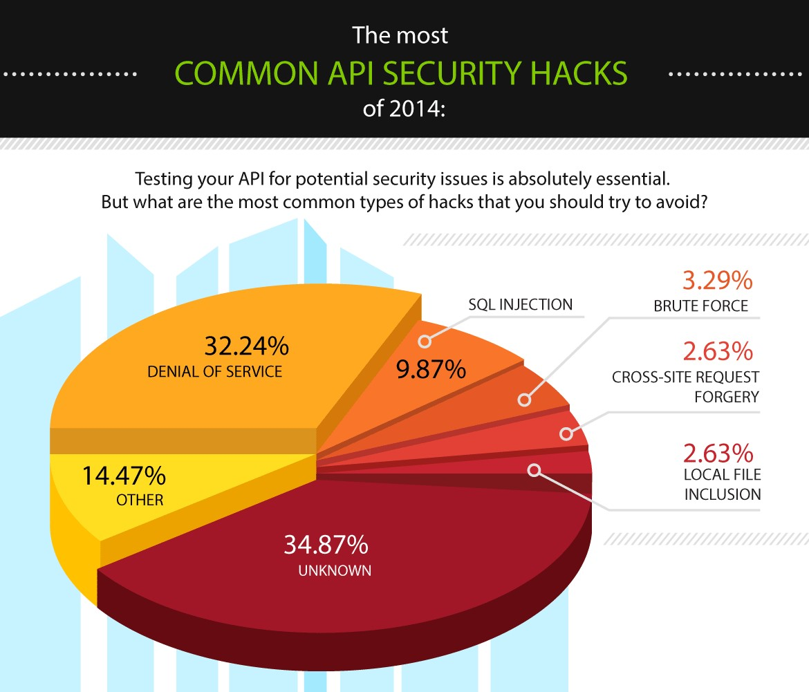

Introduction
What is an API?
An API (Application Programming Interface) is a collection of protocols, functions, and tools used for developing applications. These interfaces are utilized in numerous modern applications including e-commerce, social networks, cloud computing, and mobile development. For example, the Youtube API is an interface which allows developers to include Youtube video content into their applications.
What is the API Stronghold?
The API stronghold outlines four paradigms which encapsulate the entire topic of API security. These four defenses (Authorization, Authentication, Federation, Delegation) are each explained in greater detail below. Distinguishing these four fundamental qualities of API security provides valuable insight into common practices shared between APIs with vastly different security needs.
The Four Defenses
Authentication
What is Authentication?
This layer of API security articulates an API's need to identify clients.
Why do we need it?
Authentication is of paramount importance to API Security as it enables interfaces to successfully identify and award clients appropriate permissions and access to data. Authentication systems allow APIs to maintain relationships between clients and data which in many cases has persisted throughout multiple sessions. Social media login systems are good examples of this security layer as they utilize client credentials to successfully identify clients and then in turn provides those individuals with relevant content.
Authorization
What is Authorization and how is it different from Authentication?
Authorization and Authentication are easily confused as they both involved in the process of allowing users to access their relevant data. However, these two layers articulate two entirely separate paradigms in the discussion of API security. Authentication, as previously explained, is the means by which an API identifies a client. Authorization is the means by which an API interprets a client's identity and in turn determines that user's permissions and access to data. The separation of these two layers is beneficial in the topic of API security because it articulates that the vulnerabilities and implementation details of these systems should be occur separately regardless of their dependence upon one another.
Why do we need it?
Regulating appropriate client access to API assets is pivotal to the success of API security as it ensures that clients can only interact with data in predictable, pre-planned ways. When considering the amount of security attacks which exploit vulnerabilities in file system architectures the relevance of this security layer becomes increasingly apparent.
Federation
What is Federation
Federation is short for federated identity management(FIdm) which consists of having a set of policies and protocols in order to manage the identity of API users and devices. Single sign on (SSO) is a subset of FIdM in which a user's auth token is trusted across multiple systems or organizations. Federated security serves a different purpose for different levels of users. The base users the federated security system allows for the use of a small set of credentials for use on many systems, services, and APIs. For admins, federated security Examples of auth systems are Google Identity Federation, OAuth, OpenId, and security tokens.
Current Standards
This section explains some of the current standards for securing a REST API.
Authentication and Session Management
REST APIs should use session based-authentication by establishing a session token via a POST request or placing the API key in the POST body or in a cookie. All usernames, passwords, session tokens, and API keys should not be placed into the url. The reason for this is that many web server's log the urls and if the url contains valuable session information and an attacker gets access to an error message then they will have access to valuable data. EXAMPLES HERE?? Talk about OAuth 2.0 authorization framework
Authorization
Protecting HTTP methods is a common way of enforcing authorization restrictions. A common scheme is using GET to read, POST to create, PUT to replace and update, and DELETE to delete. Of course the api should make sure the incoming session token or API key is valid for the HTTP method requested. EXAMPLE HERE???
Input Validation
First make sure the API is susceptible to sql injection attacks and that the inputs are sanitized. Next consider rate limiting the requests to a certain number of requests per hour or day to prevent fuzzing. There are also others ways to prevent attacks by strongly typing incoming data. This means for an input only accept numbers, characters, or some other acceptable value that makes sense in the context. This increases the difficulty of attacks against your API. Commonly REST APIs allow for multiple response types and the client will specify the order of response types in the Accept header of the request. Validate incoming content types by comparing the Content-Type header of the POST or PUT request with the format of the actual data. If the API encounters mismatching content or a missing content header it should respond with a 406 Not Acceptable response.
Pokemon Go Case Study
This section explains an recent attack on Pokemon Go's API
Last July, Pokemon Go was released by a mobile development company called Niantic and immediately caught on like wildfire. The interactive mobile game had amassed over 100 million downloads in just over a month (SOURCE). With this huge user base came overloaded servers, location issues, app malfunctions, and naturally attackers targeting Pokemon Go's API.
One of the unique characteristics of the game is that you are able to play in an augmented reality environment on a mobile device. Pokemon that are close to a user's location are shown on the game's map allowing the user to attempt to capture them. However only the Pokemon within roughly 500 meters of the user are shown on the map. To attackers this meant that if it was possible to send fake coordinates to Pokemon Go's API then you could reveal the location of Pokemon everywhere. This hack was exactly what was pulled off by a reddit user.
In order to pull off this hack you first needed to install some MITM attack or network snooping software such as Charles with SSL Proxy which allows the user to decrypt HTTPS messages using a SSL Proxy. Also the user needs to have some way of decoding binary(.bin) files which is what the Pokemon Go API responds with. To decode these .bin files you can use the protoc command and the .proto file provided by this specific reddit user. For more information on .proto files and how they are used click here(https://developers.google.com/protocol-buffers/docs/proto3). Once this is setup the user can then connect to Pokemon Go and read the unencrypted responses with Charles and decode the binaries sent back. Once these binaries are decoded you can view in plaintext the locations of nearby Pokemon and just fake new coordinates to build an entire map of Pokemon locations.
Other attackers have taken this hack to another level and built software to automatically "farm" Pokemon without the user ever moving far. In response to this Niantic released a new version of Pokemon Go that created hidden data called Unknown 6 (U6) the somehow used hashed encryption to hide the users gps coordinates in order to send to the server. However this U6 algorithm changed with every tick of Pokemon Go's internal "heartbeat" timer. In theory, this only allowed a valid game client to create valid U6 hashes and allow for Niantic to easily be able to detect bots and hackers trying to spoof game info. Unfortunately for Niantic, this U6 generation algorithm was cracked within 3 days of the new release. Then the attackers have took this attack and built their own 3rd party API which again allows for Pokemon Go bots and hacks to play the game.
When looking at this attack we see that sometimes attacks don't even have to lead to a security breach of some server or API to be effective. In this example attackers where able to use spoofing and API farming to gain valuable data that the developers didn't want released. So even though Pokemon Go's servers could of been airtight, attackers still found a way to break something. This is a prime example of the point made earlier that API security isn't simply a one size fits all approach. It takes multiple systems and protocols to attempt to cover an APIs entire attack surface.
Summary
In conclusion, building an API that is completely secure is very difficult in today's world. Big name companies such as Snapchat, Twitter, Tinder, and Niantic have all suffered from some sort of API security hacks. The graphic below does a good job of showing that many of the types of attacks have yet to be discovered with new attacks being created all the time. IMAGE HERE. However as the designer of the API you can prevent nearly all these attacks by staying up to date with the latest software patches, authorization protocols, encryption algorithms, and anti attack technologies.
References and Further Readings
http://nordicapis.com/api-security-the-4-defenses-of-the-api-stronghold/https://www.soapui.org/testing-dojo/world-of-api-testing/state-of-api-security.html
https://www.akana.com/solution/api-security
http://searchsecurity.techtarget.com/tip/API-security-How-to-ensure-secure-API-use-in-the-enterprise
https://www.owasp.org/index.php/REST_Security_Cheat_Sheet
https://medium.com/aws-activate-startup-blog/api-security-for-modern-web-apps-a6a7f226a6d#.iafkk02i0/
http://blog.smartbear.com/readyapi/api-security-testing-how-to-hack-an-api-and-get-away-with-it-part-1-of-3/
http://arstechnica.com/gaming/2016/07/how-hackers-are-revealing-the-hidden-pokemon-go-monsters-all-around-you/
https://www.reddit.com/r/pokemongodev/comments/4svl1o/guide_to_pokemon_go_server_responses/
http://en.yibada.com/articles/150277/20160810/pokemon-go-tracking-app-pokemon-go-tricks-and-tips-pokemon-go-bots-and-hacks-best-gps-spoofing-app-pokemon-go.htm